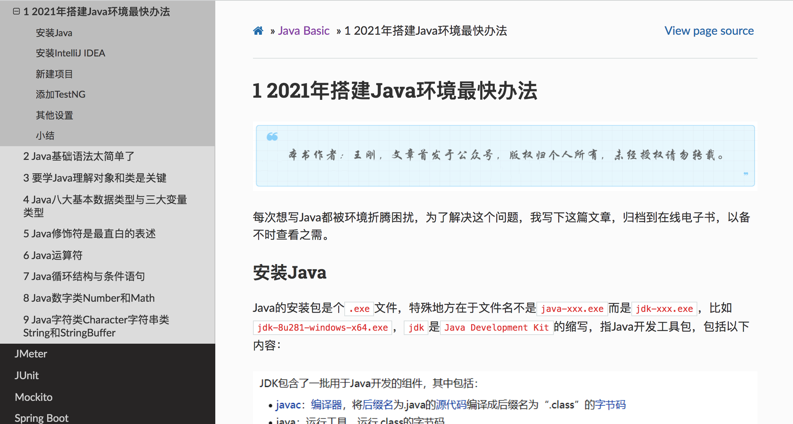

【Spring】SpringBoot简介与安装¶

SpringBoot简介¶
SpringBoot是Java技术栈的一个Web开发框架，在整个Web开发框架领域中，说SpringBoot是最成熟、最稳定、生态最强大的，一点也不为过。它最伟大的变革是让Java的Web框架也变得便捷起来，开箱即用，只需要简单配置就能快速搭建起一个后端应用，这也是它出现后迅速抢占市场，实现技术更替的重要原因。
除了Web应用开发外，SpringBoot还提供了内嵌服务器（Tomcat等）、安全、监控、健康检查等能力。
SpringBoot安装¶
本文主要介绍Maven这种方式：
第一步，安装Java，SpringBoot 2.5.6版本需要Java8及以上版本，最新的Java17也兼容。
第二步，安装Maven，不需要单独安装，下载一个IntelliJ就可以了，详细步骤可以参考我博客中这篇文章：

第三步，在pom.xml中配置SpringBoot：
<?xml version="1.0" encoding="UTF-8"?> <project xmlns="http://maven.apache.org/POM/4.0.0" xmlns:xsi="http://www.w3.org/2001/XMLSchema-instance" xsi:schemaLocation="http://maven.apache.org/POM/4.0.0 https://maven.apache.org/xsd/maven-4.0.0.xsd"> <modelVersion>4.0.0</modelVersion> <groupId>com.example</groupId> <artifactId>myproject</artifactId> <version>0.0.1-SNAPSHOT</version> <parent> <groupId>org.springframework.boot</groupId> <artifactId>spring-boot-starter-parent</artifactId> <version>2.5.6</version> </parent> <!-- Additional lines to be added here... --> </project>
下篇文章《开发你的第一个SpringBoot应用》将继续探究SpringBoot安装后的使用。
参考资料：
https://docs.spring.io/spring-boot/docs/current/reference/htmlsingle/#getting-started